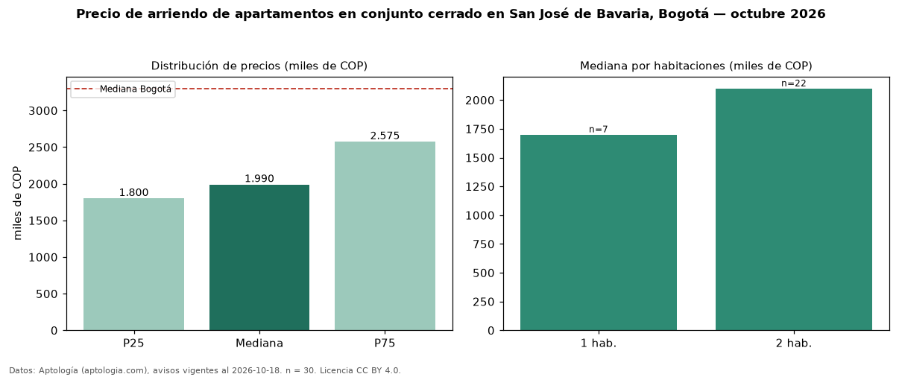

Precio de arriendo de apartamentos en conjunto cerrado en San José de Bavaria, Bogotá — octubre 2026
COP 1,99 millones al mes es el canon mediano de apartamentos en conjunto cerrado en arriendo en San José de Bavaria, Bogotá (n = 30 avisos). Prácticamente coincide con la mediana de todos los apartamentos en arriendo de San José de Bavaria (COP 1,99 millones, n = 56); este segmento reúne el 54 % de esos avisos. Por metro cuadrado, la mediana es COP 44.737/m² al mes (n = 30), 5 % por debajo del conjunto de referencia (COP 47.321/m²). El área mediana anunciada es 42 m². El segmento con más oferta es el de 2 habitaciones (22 avisos, mediana COP 2,10 millones); pasar de 1 habitación a 2 habitaciones cambia la mediana +24 %. El estrato más frecuente es 4 (57 % de los avisos con estrato). La mediana de todos los apartamentos en arriendo de Bogotá es COP 3,30 millones (−40 % de diferencia). La mitad central de los avisos va de COP 1,80 millones a COP 2,58 millones (razón 1,4), una dispersión moderada. Datos: Aptología (aptologia.com), CC BY 4.0 — https://www.aptologia.com/arriendo/bogota/san-jose-de-bavaria. Archivos: PDF, CSV con las cifras y gráfica PNG.

| Avisos únicos | 30 |
|---|---|
| Percentil 25 | COP 1.800.000 |
| Mediana | COP 1.990.000 |
| Percentil 75 | COP 2.575.000 |
| Mediana por m² | COP 44.736 |
Fuente: avisos vigentes de portales inmobiliarios recopilados por Aptología, deduplicados (mínimo 30 avisos únicos por celda). Precios pedidos, no cerrados. Fecha: 2026-10-18.